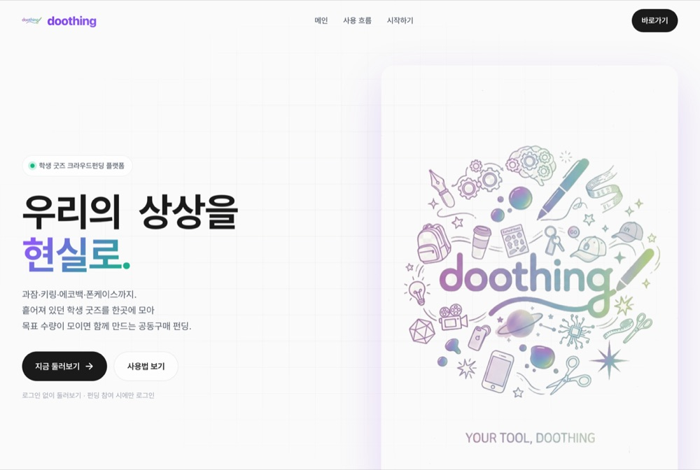
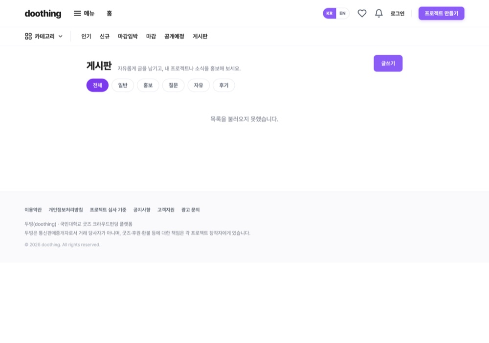
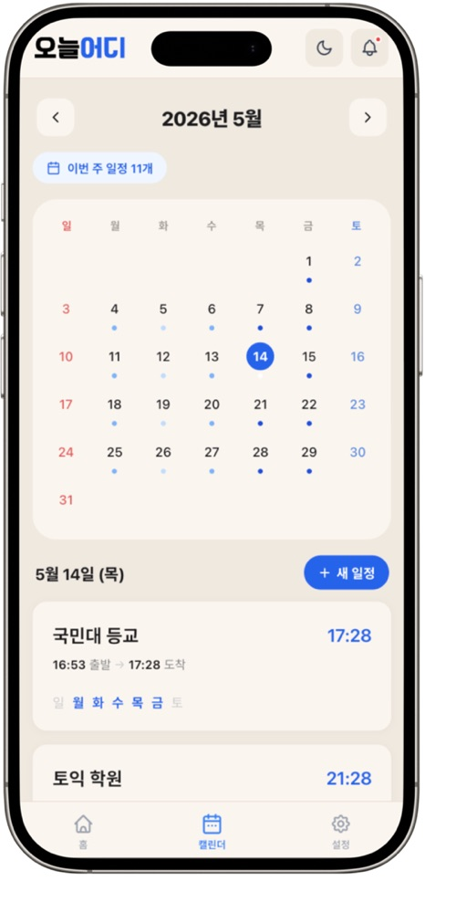
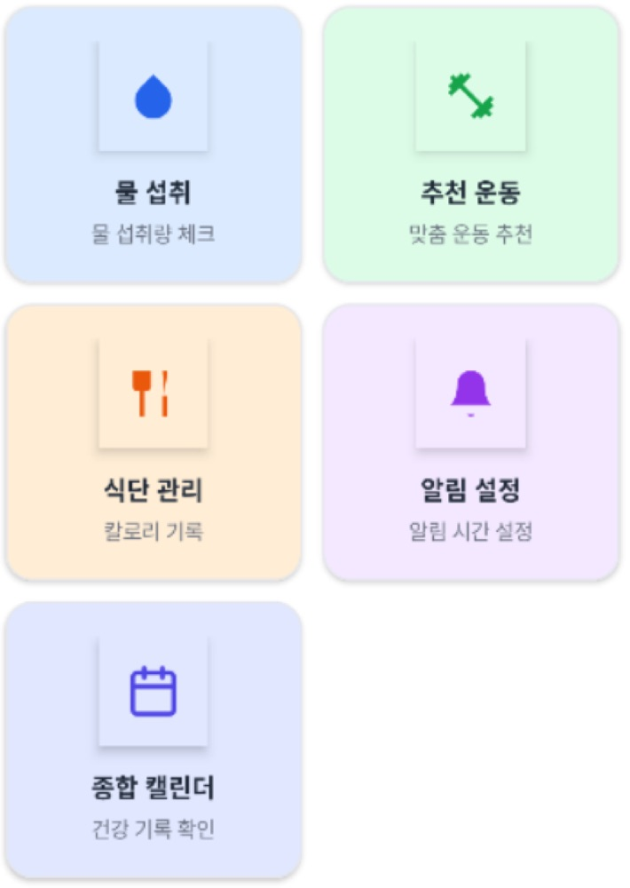
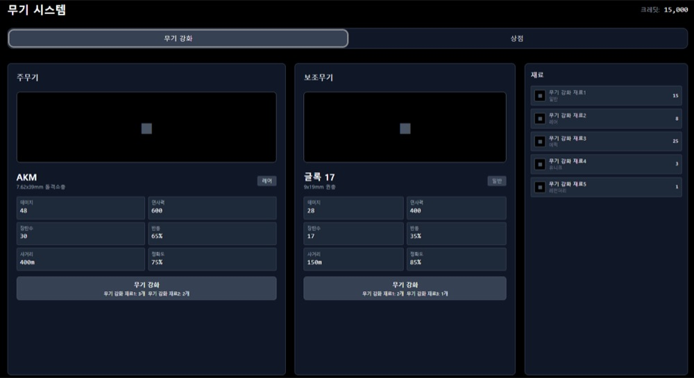
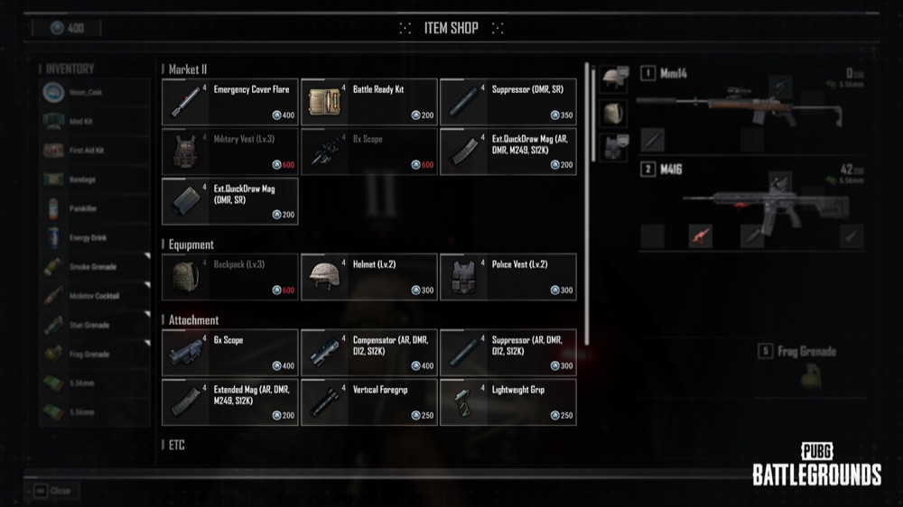
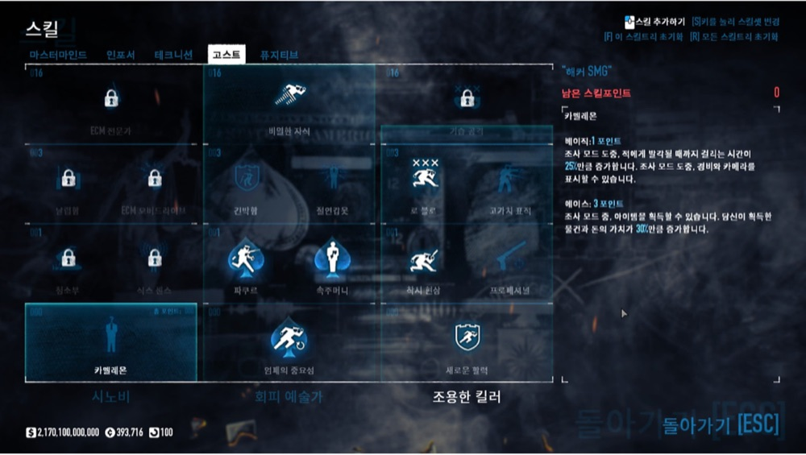

직무 연관도가 높은 순서로 정리했습니다. 모든 코드·커밋·PR은 GitHub에서 확인할 수 있습니다.
01 — KDD · 학사 규정 RAG 챗봇 백엔드
학칙·학사 규정 PDF를 근거로 출처와 함께 답하는 RAG 챗봇입니다. AI가 지어내지 않고 실제 문서를 인용하게 만드는 것이 목표였고, 저는 백엔드를 맡았습니다.
시스템 구성
Next.js 웹 → Spring 백엔드(담당) → FastAPI AI 서버
제가 맡은 건 가운데 Spring 백엔드입니다. 문서 업로드·파싱·청킹과 FAQ·통계, AI 서버 오케스트레이션을 담당했고, 임베딩·LLM 자체(AI 서버)는 팀원이 맡았습니다.
나의 역할
문서 파이프라인 전체 구현 — PDF 업로드 → PDFBox 페이지별 파싱 → 페이지 경계를 넘지 않는 청킹(550자·100자 오버랩) → AI 서버 임베딩 요청AI 서버 연동 3종 (임베딩·삭제·FAQ 분석)을 클라이언트로 캡슐화하고 트랜잭션 경계를 재설계FAQ 자동 인입 파이프라인 구축 — 사용자 질문 수집 → AI 분석 → 학번·이메일·전화 PII 마스킹 → 관리자 검수 → 등록다중 관리자 동시 승인을 막는 비관적 락 상태머신, 조회 중복을 제거한 인기 문서 집계, 정합성을 보장한 관리자 통계
트러블슈팅 · AI 호출이 DB 트랜잭션을 붙잡는 문제
문제 — 수십 초짜리 임베딩 호출이 트랜잭션 안에서 커넥션·락을 점유해, 동시 업로드 시 커넥션 풀이 마를 위험이 있었습니다.
원인 — 문서 저장(트랜잭션)과 임베딩(외부 네트워크)이 한 메서드에 묶여 있었습니다.
해결 — 영속성 로직을 별도 트랜잭션으로 분리하고, 트랜잭션이 닫힌 뒤 AI를 호출하도록 경계를 다시 그었습니다. 청크는 saveAndFlush로 PK를 먼저 확보했습니다.
결과 — AI 외부 호출 동안 DB 락을 점유하지 않게 됐고, 업로드·재처리를 상태머신(PROCESSING→COMPLETED/FAILED)으로 정리했습니다.
결과 · 문서 파이프라인·FAQ 자동화·통계까지 백엔드 도메인을 구현. 병합 PR 13건, 본인 작성 Flyway 마이그레이션 7건.
02 — 두띵(Doothing) · AWS 위 AI 커스텀 디자인 플랫폼
공동구매할 굿즈를 AI로 직접 디자인·가상 피팅하는 서비스입니다. 전체 355커밋 중 251커밋을 작성한 최다 기여자로 백엔드·AI·인프라를 주도했습니다.

랜딩 — 우리의 상상을 현실로 펀딩 개설 · 카테고리 네비게이션 
게시판 · 커뮤니티
시스템 구성
CloudFront/S3(정적 프론트) → EC2 · Express+TS(담당) → PostgreSQL · OpenAI
EC2 단일 서버가 REST 79개·인증·실시간 채팅·AI 작업 큐를 담당하고, AI 생성은 비동기 폴링으로 OpenAI를 호출합니다.
나의 역할
OpenAI gpt-image 기반 도면 생성·가상 피팅 서비스 단독 구현 — 중복 호출 캐시·일일 한도·과금 로그·타임아웃 등 비용/안정성 통제 내장AI 공급자 추상화 인터페이스 설계로 Gemini → OpenAI를 라우트 변경 없이 무중단 전환AWS 인프라 운영 (EC2·S3·CloudFront·RDS)과 배포 자동화, 크로스리전 RDS 지연 제거 위해 EC2 로컬 PostgreSQL로 이전Claude Code 등 AI 도구로 다회차 코드 감사 수행 — 커밋 251건 중 228건이 Claude 페어
트러블슈팅 · 70초짜리 AI 생성 vs 60초 CloudFront 타임아웃
문제 — AI 도면 생성이 CloudFront 오리진 타임아웃(60초) 안에 끝나지 않아 매번 실패했습니다.
원인 — 동기 단일 요청이라 생성이 끝날 때까지 한 연결을 붙잡았고, 60초를 못 버텼습니다.
해결 — 입력 검증 후 작업 ID를 202로 즉시 반환하고, 생성은 백그라운드로, 프론트가 3초 간격 폴링으로 결과를 회수하게 했습니다.
결과 — 60초 벽을 넘겨 AI 생성이 타임아웃 없이 안정적으로 완료됐습니다.
트러블슈팅 · 빠르게 늘린 기능의 보안을 AI 도구로 따라잡기
해결 — Claude Code·CodeRabbit·Kiro를 워크플로에 넣고 OWASP·DB·리뷰 관점으로 감사 라운드를 20여 차례 반복하며 정규식 백트래킹 DoS·소켓 IDOR·마감 경합 등을 라운드마다 수정했습니다.
결과 — 보안 결함을 반복적으로 제거했습니다. AI 도구를 일회성이 아닌 재현 가능한 절차로 활용한 경험입니다.
규모 · REST 엔드포인트 79개, DB 마이그레이션 45개 중 37개 작성, Python(numpy·rembg) 이미지 처리 툴 4종.
03 — 오늘어디(TodayWay) · 반복경로 출발 알림 PWA
반복 일정·목적지를 등록하면 외부 경로 API로 권장 출발 시각을 계산해 웹 푸시로 알려주는 PWA입니다. 백엔드 전 도메인을 단독으로 맡고 프론트에도 기여했습니다.
메인 · 권장 출발 시각 경로 안내 · 실시간 지도 
캘린더 · 반복 일정 설정 · 알림
나의 역할
백엔드 8개 도메인 (인증·회원·일정·경로·푸시·지도·지오코딩·공통), 약 22개 REST 엔드포인트 단독 설계·구현ODsay·TMAP·Kakao 외부 API 3종 연동 및 장애 자동 복구 메커니즘 구축권장 출발 시각 계산, PushScheduler 기반 VAPID 웹 푸시 알림
프론트: 첫 사용자용 17단계 온보딩 튜토리얼, 출/도착 지도 picker, 개발자 유형 테스트(24문항)
트러블슈팅 · 외부 경로 API 실패를 어떻게 회복할 것인가
문제 — ODsay가 일시 장애나 키 만료로 실패하면 경로가 잠긴 채 회복 수단이 없어 알림이 누락됐습니다.
분석 — 실패를 일시 장애·인증 만료·매핑 오류로 분류했습니다. 재시도해도 소용없는 4xx를 대상에서 빼는 것이 핵심이었습니다.
해결 — 등록 시 1회 즉시 재시도 + 스케줄러가 5분 쿨다운·최대 5회 백그라운드 재시도하고, 401/403은 운영자에게 노출했습니다.
결과 — 사용자 개입 없이 일시 장애가 약 25분 내 자동 복구됩니다. 단위 테스트 12건으로 회귀를 차단했습니다.
트러블슈팅 · 데모 직전 터진 500 (요일 6개 이상이면 등록 실패)
원인 — 요일 CSV 컬럼이 VARCHAR(20)이라 5요일(19자)은 통과하지만 6요일부터 길이를 초과했습니다. 특정 요일이 아니라 '요일 개수'가 원인이었습니다.
해결 — 컬럼을 VARCHAR(31)로 무중단 확장하고, 입력 단계 유효성 검사로 잘못된 입력은 400으로 먼저 막았습니다.
결과 — 6요일 이상 정상 처리됐고, 통합 테스트 3건으로 재발을 막았습니다.
결과 · 병합 PR 29건, AWS Amplify·GitHub Pages 멀티 배포로 데모 완수. 전역 예외처리 에러코드 18종, Flyway V1~V10.
04 — Aivive · LLM 식단 건강관리 안드로이드 앱
수분·식사·운동을 기록하고 Gemini로 식단 조언을 받는 앱입니다. 식단 도메인을 담당했습니다.

메인 · 식단 관리 진입
나의 역할
Gemini를 식단 기능에 연동 — 식단 조언, 조언 기반 후속 질문 4개 자동 생성, 음식명 입력 시 예상 칼로리 자동 조회(비동기 콜백)출력 형식을 제약한 프롬프트와 정규식 후처리로 자연어 응답을 코드가 바로 쓸 정형 데이터로 가공
Room으로 음식 DB(엔티티·DAO·외래키 CASCADE)와 캘린더·프로필 화면 제작
결과 · 병합 PR 4건, 실제 소스 약 +2,900/-820줄, 원스토어 배포. AI 모델 초기화는 팀장이 맡았고, 저는 그 모델을 식단 기능에 연결했습니다.
05 — 좀비 생존 FPS · Unity 게임
상점·무기 강화·능력치 업그레이드 등 게임 진행 시스템과 인게임 HUD를 맡았습니다. 데이터-로직-UI를 분리해 설계했습니다.

무기 시스템 · 능력치·강화 재료 
아이템 상점 
능력치 강화 인벤토리 인게임 HUD · 거점 상호작용
나의 역할
상점 → 인벤토리 → 무기/능력치 강화로 이어지는 게임 내 경제 루프를 데이터(ScriptableObject)-로직-UI 계층으로 분리 설계
인게임 HUD(나침반·탄약·낮밤 시계·레이더), 아이템 줍기 로직, 도메인별 사운드 매니저 등 C# 약 3,300줄(38개 스크립트) 구현
백엔드·AI 직무와는 거리가 있지만, 객체지향 설계와 시스템 통합·팀 협업을 보여주는 사례입니다.